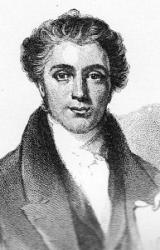

Taylor, Thomas
Rawson,

son of the Rev. Thomas
Taylor, some time Congregational Minister at Bradford, Yorkshire, was born
at Ossett, near Wakefield, May 9, 1807, and educated at the Free School,
Bradford, and the Leaf Square Academy, Manchester. From the age of 15 to 18
he was engaged, first in a merchant's, and then in a printer's office.
Influenced by strong religious desires, he entered the Airedale Independent
College at 18, to prepare for the Congregational ministry. His first and
only charge was Howard Street Chapel, Sheffield. This he retained about six
months, entering upon the charge in July 1830, and leaving it in the January
following. For a short time he acted as classical tutor at Airedale College,
but the failure of health which compelled him to leave Sheffield also
necessitated his resigning his tutorship. He died March 7, 1835. A volume of
his Memoirs and Select Remains, by W. S. Matthews, in
which were several poems and a few hymns, was published in 1836. His best
known hymn is "I'm but a stranger here". The rest in common use all from his Memoirs,
1836, are:¡X
1. Earth, with her ten thousand flowers. The
love of God.
2. Saviour and Lord of all. Hymn
to the Saviour. Altered as "Jesu, Immanuel" in the LeedsHymn Book,
1853.
3. There was a tims when children sang. Sunday
School Anniversary.
4. Yes, it is good to worship Thee. Divine
Worship. From this "'Tis sweet, 0 God, to sing Thy praise," beginning
with st. ii.
5. Yes, there are little ones in heaven. Sunday
School Anniversary.
-- John Julian, Dictionary
of Hymnology (1907)
I'm but a
stranger here. T. R. Taylor. [Heaven the Home.] This
hymn, written apparently during his last illness, was published in his Memoirs
and Select Remains, by W. S. Matthews, 1836, in 4 stanzas of 8
lines, and headed "Heaven is my home. Air¡X4 Robin Adair.'" In 1853 it
was included in the Leeds Hymn Book; and later in
numerous collections in Great Britain and America, sometimes as "We are
but strangers here." Original text in Baptist Psalms &
Hymns, 1858 and 1880, with tempest for "tempests" in stanza ii.,
line 1.
--John Julian, Dictionary
of Hymnology (1907)
Arthur Seymour
Sullivan (b Lambeth, London. England. 1842; d.
Westminster, London, 1900)

was born of an
Italian mother and an Irish father who was an army bandmaster and a
professor of music. Sullivan entered the Chapel Royal as a chorister in
1854. He was elected as the first Mendelssohn scholar in 1856, when he began
his studies at the Royal Academy of Music in London. He also studied at the
Leipzig Conservatory (1858-1861) and in 1866 was appointed professor of
composition at the Royal Academy of Music. Early in his career Sullivan
composed oratorios and music for some Shakespeare plays. However, he is best
known for writing the music for lyrics by William S. Gilbert, which produced
popular operettas such as H.M.S. Pinafore (1878), The
Pirates of Penzance (1879), The
Mikado (1884), and Yeomen of the
Guard (1888). These operettas satirized the court and
everyday life in Victorian times. Although he composed some anthems, in the
area of church music Sullivan is best remembered for his hymn tunes, written
between 1867 and 1874 and published in The Hymnary (1872)
and Church Hymns (1874), both of
which he edited. He contributed hymns to A Hymnal Chiefly
from The Book of Praise (1867) and to the Presbyterian
collection Psalms and Hymns for Divine Worship (1867).
A complete collection of his hymns and arrangements was published
posthumously as Hymn Tunes by Arthur Sullivan (1902).
Sullivan steadfastly refused to grant permission to those who wished to make
hymn tunes from the popular melodies in his operettas.
Bert Polman